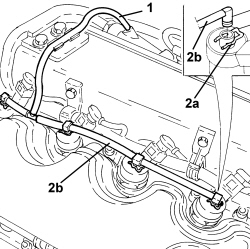
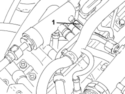
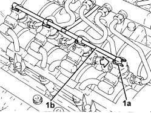

1060F52 FUEL RETURN PIPE FROM INJECTORS - R.R.
- Path
- Procedures > 10 ENGINE > 1060 DIESEL INJECTION SYSTEM > 1060F INJECTORS AND PIPES > 1060F52 FUEL RETURN PIPE FROM INJECTORS - R.R.
- Kind
- repair procedure (removal / refitting; the operation number is the code)
- Applies to
- engines: 1.9 JTD 8v, 1.9 JTD 16v, 2.4 JTD 20v; all production periods
- Interactive page
- https://sloeber94.github.io/elrnDB-fCrm/en/#/194002176
Applies to: engines: 1.9 JTD 8v; all production periods
 Removing
Removing
 Refitting
RefittingOp. 1016A10 SOUND-PROOFING COVER - R.R
1. Disconnect the pipe from the injectors to the fuel recovery manifold, fuel recovery manifold side.
2. Push the springs (2a) manually and disconnect the pipe (2b) from the connectors on the injectors, then remove it.

Applies to: engines: 1.9 JTD 8v; all production periods
Refitting
Removing- Fit the pipe from the injectors to the fuel recovery manifold and connect to the fuel recovery manifold.
- Connect the pipe from the injectors to the fuel manifold, injector side pushing it home until the clips click into place.
Applies to: engines: 1.9 JTD 16v, 2.4 JTD 20v; all production periods
Removing
RefittingOp. 1016A10 SOUND-PROOFING COVER - R.R
1. Disconnect the pipe from the injectors to the fuel recovery manifold, fuel recovery manifold side.

Applies to: engines: 1.9 JTD 16v, 2.4 JTD 20v; all production periods
1. Push the springs (1a) manually and disconnect the pipe (1b) from the fittings on the injectors, then remove it.

Applies to: engines: 1.9 JTD 16v, 2.4 JTD 20v; all production periods
Refitting
Removing- Fit the pipe from the injectors to the fuel recovery manifold and connect to the fuel recovery manifold.
- Connect the pipe from the injectors to the fuel recovery manifold to the injectors and push home until the clips click into place.